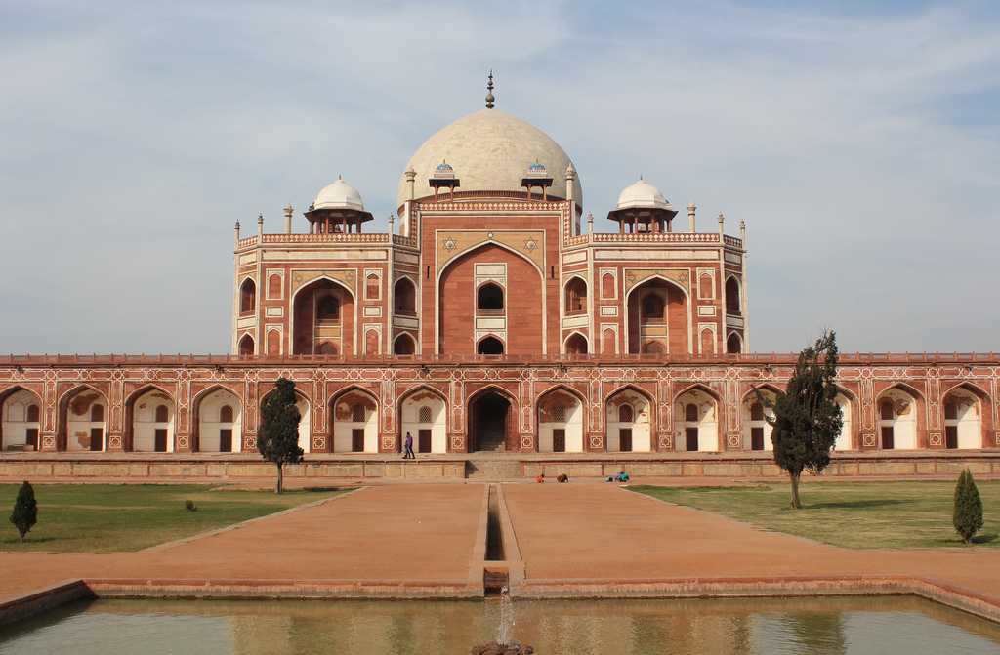
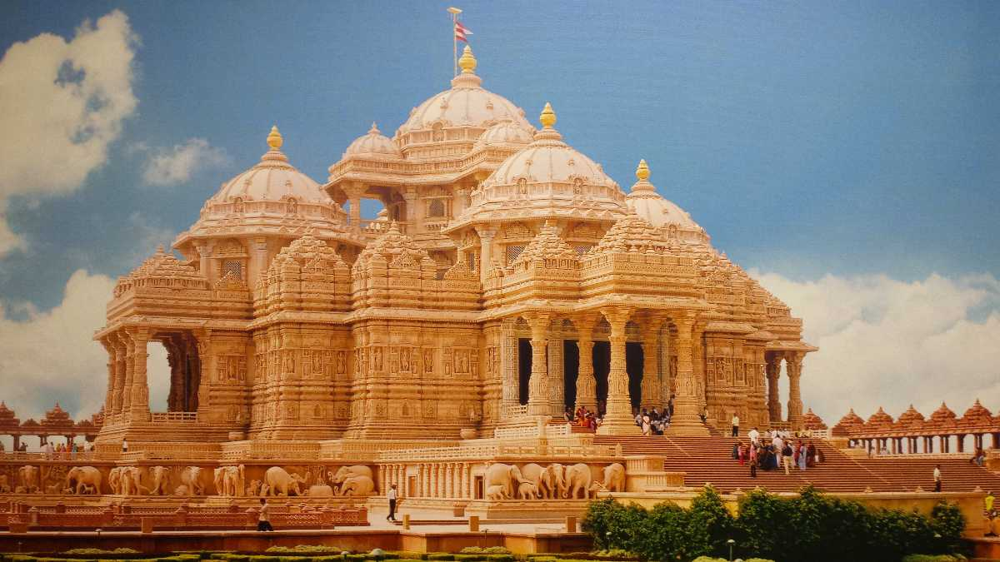

Dilli Haat
Dilli Haat is a paid-entrance open-air market, food plaza, and craft bazaar located in Delhi. The area is run by Delhi Tourism and Transportation Development Corporation (DTTDC), and unlike the traditional weekly market, the village Haat, Dilli Haat is permanent

Humayun’s Tomb
For the history buffs, you can visit Humayun’s Tomb, wherein lies Emperor Humayun. Moreover, it is also the first garden tomb of the country. Situated on the banks of the Yamuna River,this place is also home to the remnants of many other famed Mughals, including the Afghan noble Isa Khan Niyazi.
Lodhi Gardens
This is a huge garden which is also home to the tombs of Sayyid ruler Mohammed Shah and Lodhi king Sikandar Lodhi. Dating back to the fifteenth century, this architectural site is best for picnics. You can also come here with your friends and family to spend a relaxing time, enjoying the rich history around you.

Akshardham Temple
Yet another architectural marvel, the Swaminarayan Akshardham Temple epitomise the Indian spirituality and culture. From Hindu teachings on the walls to the intricate carvings, this temple will surely mesmerise you. Additionally, you can also enjoy a beautiful water show on the step wall here, which is India’s largest step wall.